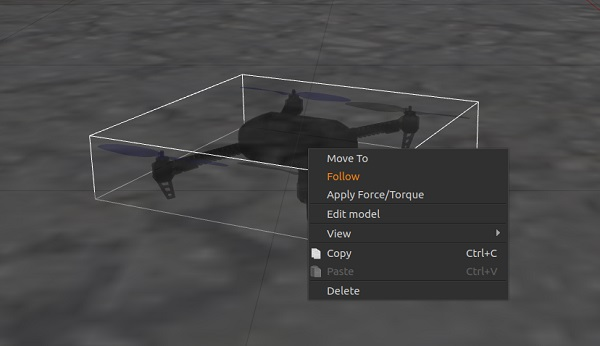
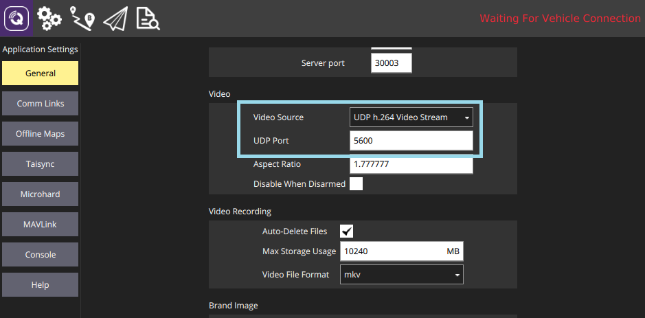
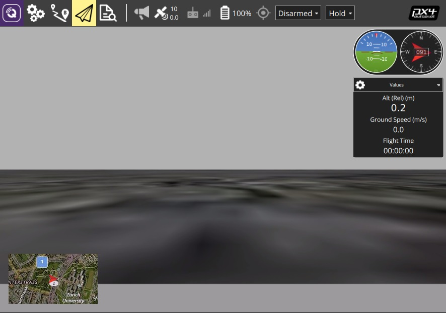

가제보 모의 시험 환경
가제보 는 개체 회피 및 컴퓨터 시각 정보 처리 시험에 일부 적합한, 강력한 자동화 로봇용 3차원 모의 시험 환경입니다. 이 페이지에서는 SITL과 단일 기체와의 활용법을 설명합니다. 가제보는 또한 HITL과 다중 기체 모의 시험용으로 활용할 수 있습니다.
지원 기체: 쿼드 (Iris 와 Solo, 헥스 (태풍 H480), 일반 쿼드 델타 수직 이착륙기, 태일시터, 항공기, 탐사선, 수중선/무인 수중선
가제보 자동화 기체 제어를 목적으로 주로 ROS, 툴킷, 외부 보드 API를 함께 활용합니다. PX4를 ROS와 활용하려면 ROS 활용 절차를 따라 ROS와 가제보를 설치해야합니다(그리고 설치 과정상 중복을 피하십시오).

모의 시험 프로그램, 모의 시험 환경, 모의 시험 설정(예: 지원 기체) 관련 일반 정보는 모의 시험을 참고 하십시오.
설치
가제보 9 설치 프로그램 내용은 표준 빌드 과정에 들어있습니다:
- macOS: 맥용 개발 환경
- Linux: 우분투 LTS / 데비안 리눅스 > 가제보, JMAVSim, NuttX(Pixhawk) 대상 개발 환경
- Windows: 지원 안함.
추가 설치 방법은 gazebosim.org에서 찾을 수 있습니다.
모의 시험 환경 실행
PX4 SITL과 에어프레임 설정(멀티콥터, 비행체, 수직 이착륙기, 광류센서 및 다중 기체 모의 시험 지원)을 불러오는 명령으로 모의 시험환경을 시작하십시오.
가장 쉬운 방법은 PX4 Firmware 저장소 루트 디렉터리에서 터미널을 열고 원하는 대상에 대해 make 명령을 호출하는 방식입니다. 예를 들어, 쿼드로터 모의 시험을 시작(기본)하려면:
cd /path/to/Firmware
make px4_sitl gazebo
지원 기체와 make 명령은 아래와 같습니다(기체 그림을 보려면 링크를 누르십시오).
전체 대상을 빌드하려면
make px4_sitl list_vmd_make_targets명령을 실행 (하고gazebo_로 시작하는 요소를 검색) 하십시오.
| 기체 | 명령 |
|---|---|
| 쿼드로터 | make px4_sitl gazebo |
| 광류 센서 장착 쿼드로터 | make px4_sitl gazebo_iris_opt_flow |
| 3DR 솔로 (쿼드로터) | make px4_sitl gazebo_solo |
| 태풍 H480 (헥스로터) (동영상 스트리밍 지원) | make px4_sitl gazebo_typhoon_h480 |
| 표준 비행체 | make px4_sitl gazebo_plane |
| (캐터펄트 발사형) 표준 비행체 | make px4_sitl gazebo_plane_catapult |
| 표준 수직 이착륙기 | make px4_sitl gazebo_standard_vtol |
| 테일시터 수직 이착륙기 | make px4_sitl gazebo_tailsitter |
| Ackerman 기체 (UGV/탐사선) | make px4_sitl gazebo_rover |
| 히포캠퍼스 TUHH (UUV: 무인 수중선) | make px4_sitl gazebo_uuv_hippocampus |
| 보트 (USV: 무인 수면선) | make px4_sitl gazebo_boat |
| 구름선 (비행선) | make px4_sitl gazebo_cloudship |
파일 및 코드 설치 안내서는 빌드 과정에 오류가 나타날 경우 도움이 될 참고서입니다.
위 명령은 전체 인터페이스에 단일 기체를 띄워 실행합니다. 다른 옵션은 다음과 같습니다:
- PX4와 가제보를 개별 시작하면 가제보 실행 상태를 유지할 수 있고 PX4만 필요할 경우 다시 실행할 수 있습니다(둘 다 다시 시작하는 것보단 빠름).
- 가제보 인터페이스를 시작하지 않는 헤드리스 모드로 모의시험 환경을 실행합니다(자원을 훨씬 적게 차지하며 더 빠릅니다).
하늘로 띄우기
위에서 언급한 make 명령은 PX4를 우선 빌드하고, 가제보 모의 시험 환경을 띄웁니다.
PX4를 시작하면 아래와 같이 PX4 셸을 실행합니다.
______ __ __ ___
| ___ \ \ \ / / / |
| |_/ / \ V / / /| |
| __/ / \ / /_| |
| | / /^\ \ \___ |
\_| \/ \/ |_/
px4 starting.
INFO [px4] Calling startup script: /bin/sh etc/init.d-posix/rcS 0
INFO [param] selected parameter default file eeprom/parameters_10016
[param] Loaded: eeprom/parameters_10016
INFO [dataman] Unknown restart, data manager file './dataman' size is 11798680 bytes
INFO [simulator] Waiting for simulator to connect on TCP port 4560
Gazebo multi-robot simulator, version 9.0.0
Copyright (C) 2012 Open Source Robotics Foundation.
Released under the Apache 2 License.
http://gazebosim.org
...
INFO [ecl/EKF] 5188000: commencing GPS fusion
The console will print out status as PX4 loads the airframe-specific initialisation and parameter files, waits for (and connects to) the simulator. Once there is an INFO print that [ecl/EKF] is commencing GPS fusion the vehicle is ready to arm.
Right-clicking the quadrotor model allows to enable follow mode from the context menu, which is handy to keep it in view.

이 기체를 다음 명령으로 띄울 수 있습니다:
pxh> commander takeoff
사용법/설정 옵션
Headless Mode
Gazebo can be run in a headless mode in which the Gazebo UI is not launched. This starts up more quickly and uses less system resources (i.e. it is a more "lightweight" way to run the simulation).
Simply prefix the normal make command with HEADLESS=1 as shown:
HEADLESS=1 make px4_sitl gazebo_plane
개별 이륙 지점 설정
The takeoff location in SITL Gazebo can be set using environment variables. This will override both the default takeoff location, and any value set for the world.
The variables to set are: PX4_HOME_LAT, PX4_HOME_LON, and PX4_HOME_ALT.
예를 들어:
export PX4_HOME_LAT=28.452386
export PX4_HOME_LON=-13.867138
export PX4_HOME_ALT=28.5
make px4_sitl gazebo
모의 시험 진행 속도 변경
The simulation speed can be increased or decreased with respect to realtime using the environment variable PX4_SIM_SPEED_FACTOR.
export PX4_SIM_SPEED_FACTOR=2
make px4_sitl_default gazebo
For more information see: Simulation > Run Simulation Faster than Realtime.
조종기 활용
조종기와 엄지 조종기는 QGroundControl 에서 지원합니다(설정 방법은 여기에 있음).
거리 센서 성능 개선
현재 기본 월드는 높이 지도를 지면으로 활용하는 PX4/sitl_gazebo/worlds/iris.world입니다.
This can cause difficulty when using a distance sensor. If there are unexpected results we recommend you change the model in iris.model from uneven_ground to asphalt_plane.
GPS 잡음 신호 재현
가제보에서는 실제 시스템에서 확인할 수 있는 현상과 유사하게 GPS 잡음 신호를 재현할 수 있습니다(아니면 GPS 신호에 잡음이 없는 완벽한 상태임을 알리는 보고서가 나옵니다). This is useful when working on applications that might be impacted by GPS noise - e.g. precision positioning.
GPS noise is enabled if the target vehicle's SDF file contains a value for the gpsNoise element (i.e. it has the line: <gpsNoise>true</gpsNoise>). It is enabled by default in many vehicle SDF files: solo.sdf, iris.sdf, standard_vtol.sdf, delta_wing.sdf, plane.sdf, typhoon_h480, tailsitter.sdf.
GPS 잡음 신호 발생을 (비)활성 하려면:
- 임의의 가제보 대상을 빌드하여 (모든 기체에 대한) SDF 파일을 만드십시오. 예를 들어:
make px4_sitl gazebo_iris> Tip 빌드를 반복할 때 SDF 파일은 덮어쓰지 않습니다. - 대상 기체의 SDF 파일을 여십시오(예: ./Tools/sitl_gazebo/models/iris/iris.sdf).
gpsNoise항목을 찾으십시오:xml <plugin name='gps_plugin' filename='libgazebo_gps_plugin.so'> <robotNamespace/> <gpsNoise>true</gpsNoise> </plugin>- 항목이 있다면, GPS 잡음 신호가 켜진 상태입니다. 다음 줄을 삭제하면 끌 수 있습니다:
<gpsNoise>true</gpsNoise> - 나타나지 않는다면 GPS 잡음 신호를 꺼둔 상태입니다. (위에서 보시는 바와 같이)
gps_plugin섹션에gpsNoise항목을 추가하여 GPS 잡음 신호를 켤 수 있습니다.
- 항목이 있다면, GPS 잡음 신호가 켜진 상태입니다. 다음 줄을 삭제하면 끌 수 있습니다:
The next time you build/restart Gazebo it will use the new GPS noise setting.
개별 world 불러오기
PX4 supports a number of Gazebo Worlds, which are stored in PX4/sitl_gazebo/worlds) By default Gazebo displays a flat featureless plane, as defined in empty.world.
You can load any of the worlds by specifying them as the final option in the PX4 configuration target.
For example, to load the warehouse world, you can append it as shown:
make px4_sitl_default gazebo_plane_cam__warehouse
There are two underscores after the model (
plane_cam) indicating that the default debugger is used (none). See Building the Code > PX4 Make Build Targets.
You can also specify the full path to a world to load using the PX4_SITL_WORLD environment variable. This is useful if testing a new world that is not yet included with PX4.
If the loaded world does not align with the map, you may need to set the world location.
world 위치 설정
The vehicle gets spawned very close to the origin of the world model at some simulated GPS location.
The vehicle is not spawned exactly at the Gazebo origin (0,0,0), but using a slight offset, which can highlight a number of common coding issues.
If using a world that recreates a real location (e.g. a particular airport) this can result in a very obvious mismatch between what is displayed in the simulated world, and what is shown on the ground station map. To overcome this problem you can set the location of the world origin to the GPS co-ordinates where it would be in "real life".
You can also set a Custom Takeoff Location that does the same thing. However adding the location to the map is easier (and can still be over-ridden by setting a custom location if needed).
The location of the world is defined in the .world file by specifying the location of the origin using the spherical_coordinates tag. The latitude, longitude, elevation must all be specified (for this to be a valid).
An example can be found in the sonoma_raceway.world:
<spherical_coordinates>
<surface_model>EARTH_WGS84</surface_model>
<latitude_deg>38.161479</latitude_deg>
<longitude_deg>-122.454630</longitude_deg>
<elevation>488.0</elevation>
</spherical_coordinates>
You can test this by spawning a rover in the Sonoma Raceway World using the following make command (note that spawning takes longer the first time as the model needs to be downloaded from the model database):
make px4_sitl gazebo_rover__sonoma_raceway
The video below shows that the location of the environment is aligned with the gazebo world:
Starting Gazebo and PX4 Separately
For extended development sessions it might be more convenient to start Gazebo and PX4 separately or even from within an IDE.
In addition to the existing cmake targets that run sitl_run.sh with parameters for px4 to load the correct model it creates a launcher targets named px4_<mode> that is a thin wrapper around original sitl px4 app. This thin wrapper simply embeds app arguments like current working directories and the path to the model file.
To start Gazebo and PX4 separately:
Run gazebo (or any other sim) server and client viewers via the terminal specifing an
_idevariant:sh make px4_sitl gazebo___ide 또는 sh make px4_sitl gazebo_iris_ideIn your IDE select
px4_<mode>target you want to debug (e.g.px4_iris)- Start the debug session directly from IDE
This approach significantly reduces the debug cycle time because simulator (e.g. Gazebo) is always running in background and you only re-run the px4 process which is very light.
Simulated Survey Camera
The Gazebo survey camera simulates a MAVLink camera that captures geotagged JPEG images and sends camera capture information to a connected ground station. The camera also supports video streaming. It can be used to test camera capture, in particular within survey missions.
The camera emits the CAMERA_IMAGE_CAPTURED message every time an image is captured. The captured images are saved to: Firmware/build/px4sitle_default/tmp/frames/DSC_n.jpg (where n starts as 00000 and is iterated by one on each capture).
To simulate a plane with this camera:
make px4_sitl_default gazebo_plane_cam
카메라에서는 다음 MAVLink 명령을 지원하고 이에 응답합니다: MAV_CMD_REQUEST_CAMERA_CAPTURE_STATUS, MAV_CMD_REQUEST_STORAGE_INFORMATION, MAV_CMD_REQUEST_CAMERA_SETTINGS, MAV_CMD_REQUEST_CAMERA_INFORMATION, MAV_CMD_RESET_CAMERA_SETTINGS, MAV_CMD_STORAGE_FORMAT, MAV_CMD_SET_CAMERA_ZOOM, MAV_CMD_IMAGE_START_CAPTURE, MAV_CMD_IMAGE_STOP_CAPTURE, MAV_CMD_REQUEST_VIDEO_STREAM_INFORMATION, MAV_CMD_REQUEST_VIDEO_STREAM_STATUS, MAV_CMD_SET_CAMERA_MODE.
The simulated camera is implemented in PX4/sitl_gazebo/src/gazebo_geotagged_images_plugin.cpp.
낙하산/비행 종료 재현
Gazebo can be used to simulate deploying a parachute during Flight Termination (flight termination is triggered by the PWM command that is simulated in Gazebo).
The if750a target has a parachute attached to the vehicle. To simulate the vehicle, run the following command:
make px4_sitl gazebo_if750a
To put the vehicle into flight termination state, you can force it to fail a safety check that has flight termination set as the failsafe action. For example, you could do this by forcing a Geofence violation.
For more information see:
동영상 스트리밍
PX4 SITL for Gazebo supports UDP video streaming from a Gazebo camera sensor attached to a vehicle model. When streaming is enabled, you can connect to this stream from QGroundControl (on UDP port 5600) and view video of the Gazebo environment from the simulated vehicle - just as you would from a real camera. The video is streamed using a gstreamer pipeline and can be enabled/disabled using a button in the Gazebo UI.
The Gazebo camera sensor is supported/enabled on the following frames:
Prerequisites
Gstreamer 1.0 is required for video streaming. The required dependencies should already have been installed when you set up Gazebo (they are included in the standard PX4 installation scripts/instructions for macOS and Ubuntu Linux).
FYI only, the dependencies include:
gstreamer1.0-plugins-base, gstreamer1.0-plugins-good,gstreamer1.0-plugins-bad,gstreamer1.0-plugins-ugly,libgstreamer-plugins-base1.0-dev.
동영상 스트리밍 시작/중지
Video streaming is automatically started when supported by the target vehicle. For example, to start streaming video on the Typhoon H480:
make px4_sitl gazebo_typhoon_h480
Streaming can be paused/restarted using the Gazebo UI Video ON/OFF button..

가제보 동영상 보는 방법
The easiest way to view the SITL/Gazebo camera video stream is in QGroundControl. Simply open Application Settings > General and set Video Source to UDP h.264 Video Stream and UDP Port to 5600:

The video from Gazebo should then display in QGroundControl just as it would from a real camera.

The Typhoon world is not very interesting.
It is also possible to view the video using the Gstreamer Pipeline. Simply enter the following terminal command:
gst-launch-1.0 -v udpsrc port=5600 caps='application/x-rtp, media=(string)video, clock-rate=(int)90000, encoding-name=(string)H264' \
! rtph264depay ! avdec_h264 ! videoconvert ! autovideosink fps-update-interval=1000 sync=false
확장 및 개별 설정
모의 시험 인터페이스를 확장하거나 개별 설정하려면, Tools/sitl_gazebo 폴더의 파일을 편집하십시오. 코드는 깃허브의 sitl_gazebo 저장소에 있습니다
The build system enforces the correct GIT submodules, including the simulator. It will not overwrite changes in files in the directory.